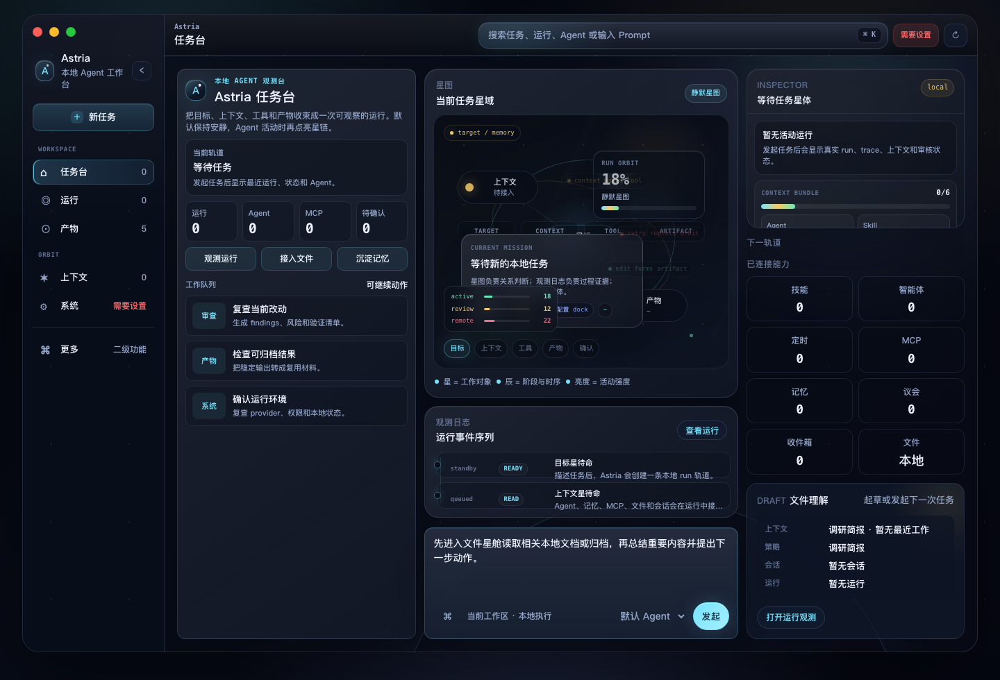
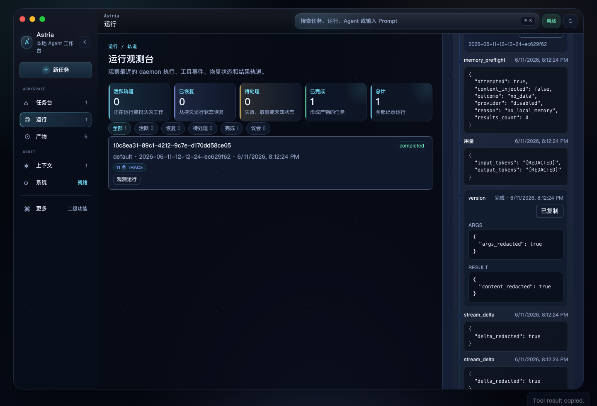

Bring your own model
Astria ships without bundled credentials. Add your Base URL, model, and API key, test the connection, then run against your chosen provider.
macOS desktop beta
Astria is a desktop command center for StarClaw: configure your own model endpoint, launch tasks, watch tool calls, inspect runs, and keep the local daemon under your control.

Astria ships without bundled credentials. Add your Base URL, model, and API key, test the connection, then run against your chosen provider.
Tool calls, streaming output, run status, and session history stay visible so a task never feels like a black box.
The StarClaw daemon runs locally, validates ownership before reuse or shutdown, and keeps diagnostics focused on your machine.
Workflow
Start with a connector check, launch a new task, watch the response stream in, then inspect the run. Astria is designed for repeated work, not one-off demos.

Trust boundary
API keys are user-supplied and redacted from diagnostics, connection test errors, logs, and UI detail surfaces.
The local app confirms that port 7533 belongs to StarClaw before it reuses, reports, or stops a daemon.
Update replacement is disabled for the beta. The macOS artifact is unsigned and should be treated as an internal trial build.
Download
Internal macOS arm64 beta. The DMG is unsigned and not notarized; public distribution still requires signing, notarization, stapling, and stable release metadata.
368a31066884f30a3a0ca46741c12925e17820618f398ef90e3a793387139356